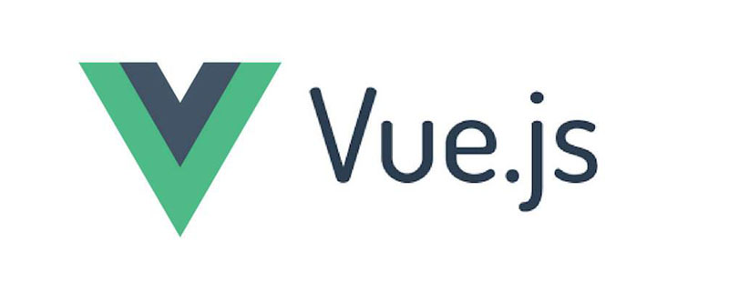
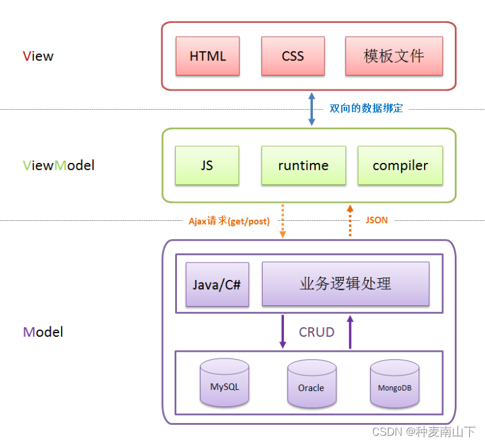

Vue.js：一个独立开发者的梦想征程
从个人项目到全球现象的技术之旅
"我只是想，能不能把 Angular 好的部分提取出来，做一个更轻量级的框架。" —— Evan You
📖 故事简介
"2013年，在 Google 工作的 Evan You 参与 AngularJS 项目时萌生了一个想法：创建一个更轻量、更易学的框架。这个简单的想法，开启了一段令人惊叹的开源之旅。"
🎯 Vue.js 核心特性

Vue.js 设计哲学与核心特性
渐进式框架 • 响应式数据绑定 • 组件化开发 • 虚拟DOM • 丰富的生态系统
🗓️ 发展时间线
2013年
想法萌生
在Google工作期间对现有框架的思考
2014年2月
第一个 Commit
Vue 诞生，开启开源之旅
2014年12月
v0.10.0 发布
开始获得开发者关注
2015年10月
v1.0 正式发布
Evangelion 版本
2016年10月
v2.0 发布
引入 Virtual DOM，性能大幅提升
2018年8月
成立核心团队
全职维护开始
2020年9月
v3.0 发布
Composition API 革命
2022年2月
成为主流
GitHub 200k+ Stars
📊 生态影响力
🚀 惊人的成长曲线
GitHub Stars 增长历程：
🌟 为什么 Vue.js 能成功？
💡 渐进式设计
- 可以从简单的页面开始
- 逐步扩展到复杂应用
- 学习曲线平缓，适合各种技能水平的开发者
🛠️ 开发者体验
- 清晰的文档和教程
- 友好的错误提示信息
- 强大的开发工具支持
🌍 社区驱动
- 开放的决策过程
- 活跃的社区贡献
- 多语言支持和完善的生态
📚 开始阅读 Vue.js 的完整故事
🚀 诞生记 🌱 成长历程 ⚡ 技术演进 🌍 生态发展 📊 数据见证 👥 团队故事 🔮 未来展望
准备好开始这段精彩的技术之旅了吗？